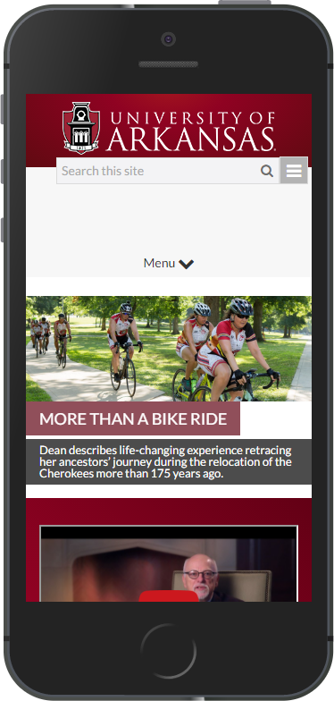

Topics
- Responsive Intro
- The View Port
- CSS Media Queries
No Class
Feb 7th, 9th, and 11th
Handling websites on Mobile
The popularity of smart phones created a massive need for websites to be accessible on small screens. It is now almost expected for all sites to be responsive.
Quick History of Web on Mobile
WAP - Wireless Application Protocol
Introduced in 1999. Very very simplistic websites. Almost completely gone by 2013.
m.######.com - Mobile Versions of sites
Completely separate version of the website. They are slimmed down versions of the desktop version with fewer features.
History Continued
Adaptive
Very similar to responsive, but had hard defined breakpoints. Sites would perform significant UI changes at certain resolutions.
Responsive
The website shifts content size and arrangement based on screen size. Elements grow and shrink fluidly with the layout.
Benefits of responsive.
- One experience for everyone
- Update your content once
- Cost effective compared to doing an m. solution.
- Recommended by search engines
Challenges with Responsive
- Hard to adapt an existing website to responsive
- Requires higher attention to detail on page performance
- Many ways to approach it.
Quick Tips
- Don't limit to any specific screen size. Assume every resolution is relevant.
- Start with desktop and move down to mobile or vise versa.
- Don't change content based on screen size.
- Example: Button text from Submit your answer to Submit
- Focus on your HTML structure and your CSS.
- Minimize JavaScript in page interaction and behavior
Tools
Surprise!!!!
CHROME DEV TOOLS!!!!!
View Port
A webpage's view port declares what size your content on a a device.
Mobile devices would scale down desktop web pages to fit their screen.
Example of No Viewport
.png)
Example
Compared
How do we get our content to scale?
We use a meta tag.
Viewport Meta Tag
CSS Media Queries
Media queries allow us to apply different CSS rules based on environment variables.
They can be though of as if statements in CSS.
Types of Media Queries
- all - All media types
- screen - for color devices
Media Query Tests
- width - (min & max)
- height - (min & max)
- orientation - (portrait or landscape)
- aspect-ratio
- resolution - dpi
Applying Media Queries
Including via style sheet
Applying Media Queries
Include via CSS
@media screen{
body {
color: red;
}
}
@media print{
body {
color: black;
}
}
Applying Media Queries
Include via CSS
@media screen and (min-width:320px) and (max-width:600px){
/*rules apply to screen widths 320px to 600px;*/
p{
color:red;
}
div{
float:right;
}
}
@media screen and (max-width:320px){
/*rules apply to screen widths below 320px*/
}